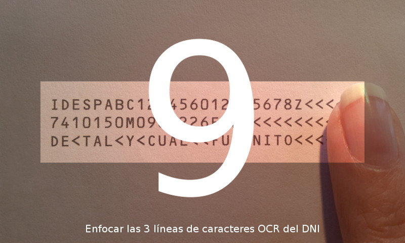
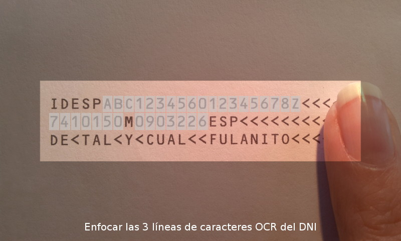

Copyright © 2011-2013 Josep Portella Florit
¿Sabías que no todos los países tienen tarjeta de identidad obligatoria?
Hay gente que se opone a su implantación.
Una vez más, alguien saca el tema; dicen que detrás del DNI, donde hay 3 líneas con diversos datos, aparece el número de personas que se llaman igual que el titular. Tú intuyes que eso no puede ser, ¿pero cómo vas a demostrar que es un leyenda urbana? Puede que incluso conozcas el artículo Desmitificando los números del DNI, en el cual se demuestra que es un mito explicando de dónde sale el dichoso número, ¿pero cómo se lo vas a explicar tú a tus amigos?
Con este programa vas a poder demostrar la verdad de una forma visual y en el mismo momento en que salga el tema.
Seguramente tu amigo ya tendrá el DNI en las manos; dile que tape con un dedo el supuesto número de personas que se llaman como él. Pon en marcha MagiaDNI en tu smartphone, enfoca con la cámara los datos a la izquierda del dedo de tu amigo y el programa mostrará por pantalla el número que tu amigo tiene bajo el dedo.
La pantalla principal del programa se utiliza con la pantalla en modo paisaje.
La cruz que aparece en medio de la pantalla te servirá de guía a la hora de enfocar los datos de la parte posterior del DNI. Al principio saldrá la imagen borrosa; cuando el programa se dé cuenta de que no encuentra las líneas, intentará enfocar la imagen automáticamente. Cuando ya tenga una idea de dónde pueden estar las líneas, marcará las dos primeras con unas líneas horizontales de izquierda a derecha de la pantalla.
En el momento en que el programa logra determinar la posición de los caracteres, marcará con un rectángulo todos los que sean necesarios para el cálculo del dígito de control.
Cuando el programa se haya asegurado de que ha leído bien los datos, mostrará en pantalla el dígito que tenga tu amigo bajo el dedo.
Pulsando el botón "menú" del smartphone estando en la pantalla principal de MagiaDNI aparecen estas opciones:
Para volver a la pantalla principal se ha de pulsar el botón "atrás" del smartphone.